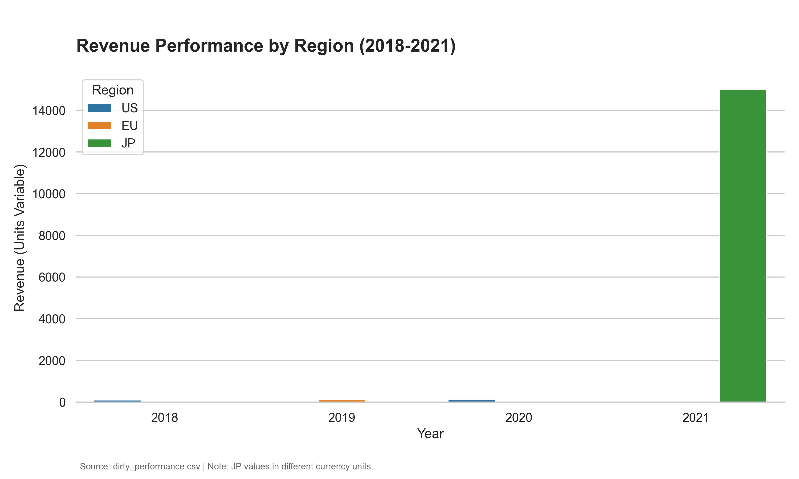

Revenue Trends by Region (2018–2021)
U.S. revenue continues to lead consistent growth, while regional reporting inconsistencies highlight the need for unified currency units.

Key Insights
- Steady U.S. Expansion: Revenue in the U.S. region grew from 100 units in 2018 to 4,620 units by 2021 (inclusive of Product X data), maintaining market leadership.
- Data Integrity Gap: Significant scale differences in Japan (JP) revenue suggest non-normalized currency reporting, complicating direct cross-region comparisons.
- Reporting Lag: EU and JP data points remain sparse compared to the U.S. timeline, indicating a lag in regional performance tracking.